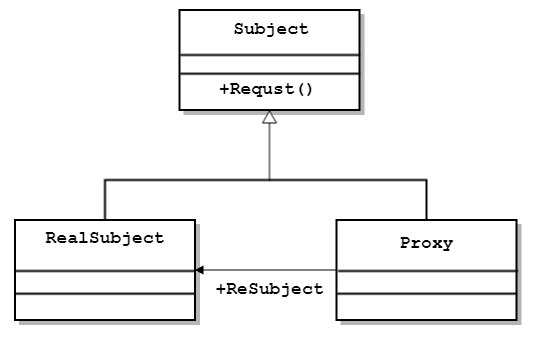

# 代理模式（Proxy）
概述：为某对象提供一个代理对象，外部只能通过代理对象来访问目标对象，从而控制外部对目标对象的直接访问。
# 特点：
- 由一个抽象接口和若干个目标对象，以及目标对象的若干代理对象组成
- 每个代理只代理一个目标对象，代理和目标对象皆继承自同一抽象接口
- 外部需要通过代理来访问目标对象
# 优缺点：
优点：
- 代理对象控制对目标对象的直接访问，起到一定程度的保护作用
- 可扩展，代理对象可以扩展目标对象的功能
- 高聚合，只要继承自同一接口的对象都能代理
缺点:
- 类的数量会增加，因为每个目标对象都要有一个代理类（可以用动态代理解决）
- 如果想增加接口的抽象方法，还需要在代理类中对应实现（可以用动态代理解决）
# 应用场景：
- 出于对系统或源代码的安全保护，不希望目标对象被直接访问时
- 希望为访问的目标对象附加额外处理功能时
# 代理模式的结构与实现
代理模式的结构
代理模式模式

动态代理

代理模式的实现
静态代理，代码如下：
StaticProxy 1
2
3
4
5
6
7
8
9
10
11
12
13
14
15
16
17
18
19
20
21
22
23
24
25
26
27
28
29
30
31
32
33
34
35
36
37
38
39
40
41
42
43
44
45
46struct Flyable
{
virtual void fly() = 0;
};
struct Bird : Flyable {
void fly() {
cout << "飞行中" << endl;
Sleep(2333);
}
};
class TimerProxy : Flyable {
private:
Flyable* flyingObject;
public:
TimerProxy(Flyable* flyingObject_):flyingObject(flyingObject_){}
time_t GetFlyingTime() {
time_t startTime = time(NULL);
fly();
time_t stopTime = time(NULL);
return (stopTime - startTime);
}
void fly() {
cout << "起飞~~~" << endl;
flyingObject->fly();
cout << "降落~~~" << endl << endl;
}
};
int main() {
TimerProxy* proxy = new TimerProxy(new Bird());
proxy->fly();
cout << "飞行时间 " << proxy->GetFlyingTime() << " 秒" << endl;
}
//运行结果:
//起飞~~~
//飞行中
//降落~~~
//
//起飞~~~
//飞行中
//降落~~~
//
//飞行时间 2 秒相信大家也看出来了，静态代理有一个很致命的弱点，就是我们这里的代理类只能代理飞行物的计时，但如果我们还想代理其他类的计时怎么办呢，比如摩托车的计时。那肯定又有人会说了，给代理类加一个 runnable 的接口，让摩托车也继承这个接口就好了。这样确实可行，但如果我们还想在抽象接口中增加方法呢？那这个代理类一样要跟着增加方法。而且我们继承越多的接口，到后面我们这个代理类的职责也会越来越重，显然不符合单一职责原则。
而且我们又怎么可能仅仅局限于计时呢？我们能不能做一个可以代理任何方法的代理类呢？然后让这个代理类代替我们原来的类来执行这些函数，答案就是动态代理
动态代理实现起来较为困难，代码篇幅也会很长，所以这里就直接给个超链接吧，有兴趣的可以去看看我的这篇讲 UE4 代理的文章，里面有介绍原理和使用方法。

结语：静态代理适用于较小规模且代理方法不常变化的代理场景，动态代理虽然解决了代理类不能重用的问题，但维护动态代理调用函数时 所需要的数据也是较为麻烦的，且实现起来也较为负责。
参考文献：
- 《设计模式：可复用面向对象软件的基础》